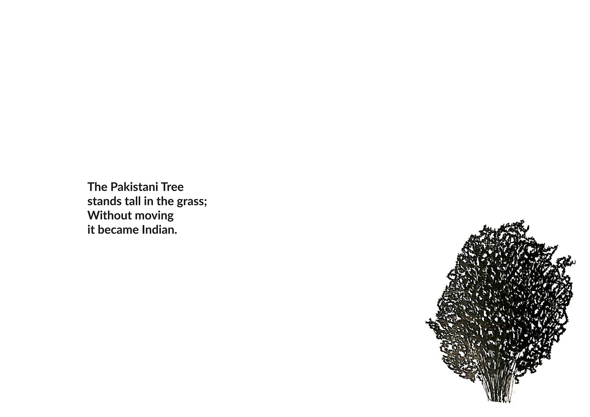

The Land with Pakistani Trees
Illustrative Storytelling
The project came to life during my excursion to a small village in Ladakh, bordering Pakistan called Turtuk. I interviewed locals of Turtuk as part of a cultural study done with Farside Collective; their life stories became the inspiration of my illustrations published in the Zine.


Zenab bano, a humble Balti woman.
She welcomed me into her house, her life where she is a mother to her kids, her children's kids and two cows.
A farmer, tailor, house keeper are few of her many roles.
She offered me some cow's milk, while she took a little peep at my drawings.
"Isnai mere..........chehre ke (while pointing at her wrinkles) bhi bana diye"
And she laughed....
She is friendly but no longer allow people to take her pictures , as they go around and circulate them on internet without her permission.
The current King of one of the lines of Yabgo dynasty, the last independent rulers of Baltistan, who resides in Turtuk, has two sisters living across the border.
He did his schooling in Pakistan and as a child. After 'Kargil war' when he came to India, to his notice Indians looked, lived just like people in Pakistan.
He told us he never liked borders and finds his own land divided by a river, a big irony.
"Yeh nadi badi hi badmashi se humare Turtuk Ko baat deti hai , mujhe lakire pasand ni"
He is a trained Polo player and lives with his 102 year old mother, wife and daughters at his Palace in old Turtuk
A man separated from his parents, brothers, sisters at the age of five. Across those barbed wire they stayed for 17 long years.
So close, he could see them, so far he could not feel them. But the hearts remained connected by hope and love, that no lines, boundaries, wires, nationality could ever weaken.
Story of Mohammad Ali separated during '1971 Kargil War', from his family, who now live in small village in Pakistan.
He is self taught , a quirky man, an avid florist and has recently installed a small hydroelectric plant in his village.
"phoolon gamlon ke daam kum kyun karen, sharab cigrette ke daam kum karne ko nahi khehte"
The oldest man in the village, 75 , recalls the night he slept as a citizen of POK and woke up as an Indian.
"Pakistani fauzi bhi ache the , Hindustani fauzi bhi ache the....
teen din tak nach gane ke sath jash manate hue swagat kiya Hindustani fauz ka"
Once served as a Porter to both the armies, recollects the stories of fear , confusion, anticipation and separation, filling the senses like smell of alluring 'Satrin' flower across the valley.